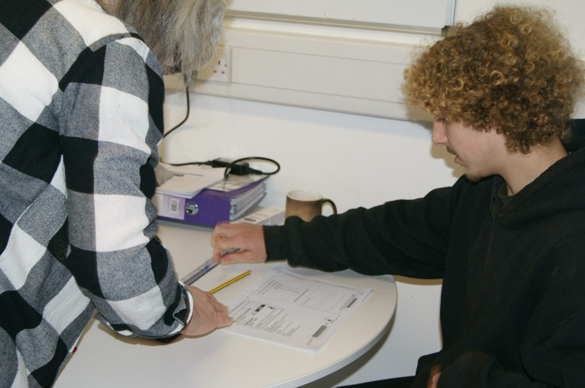
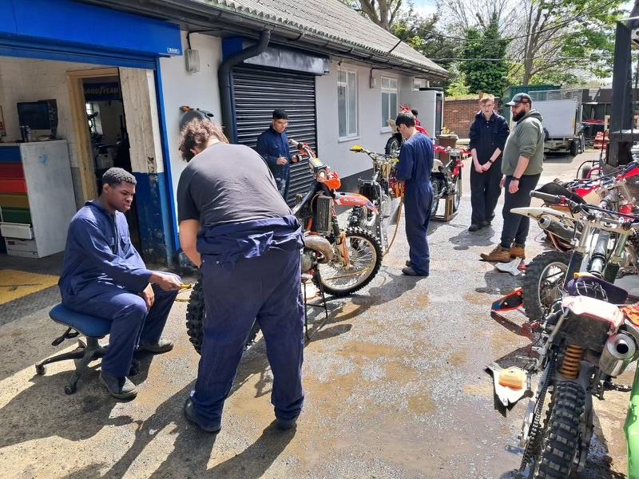
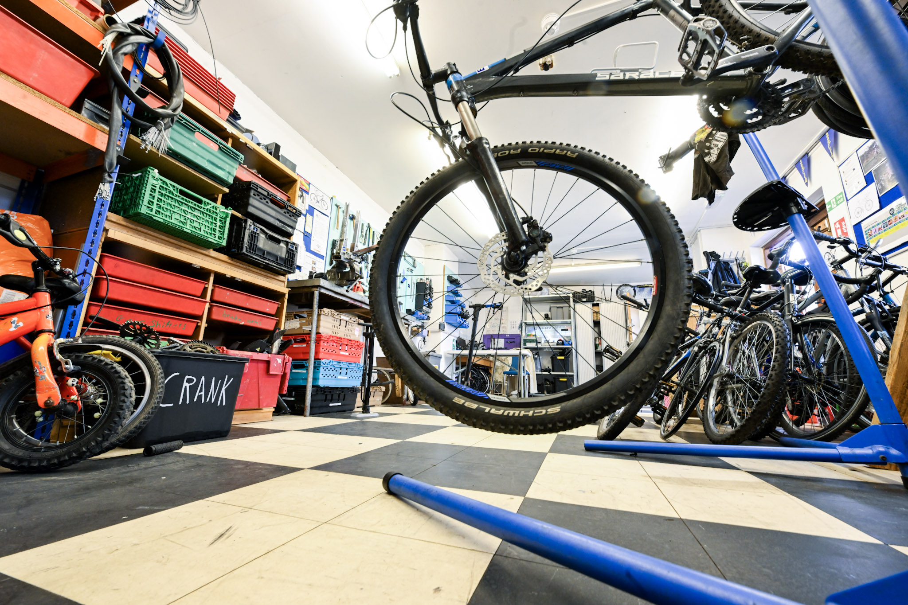
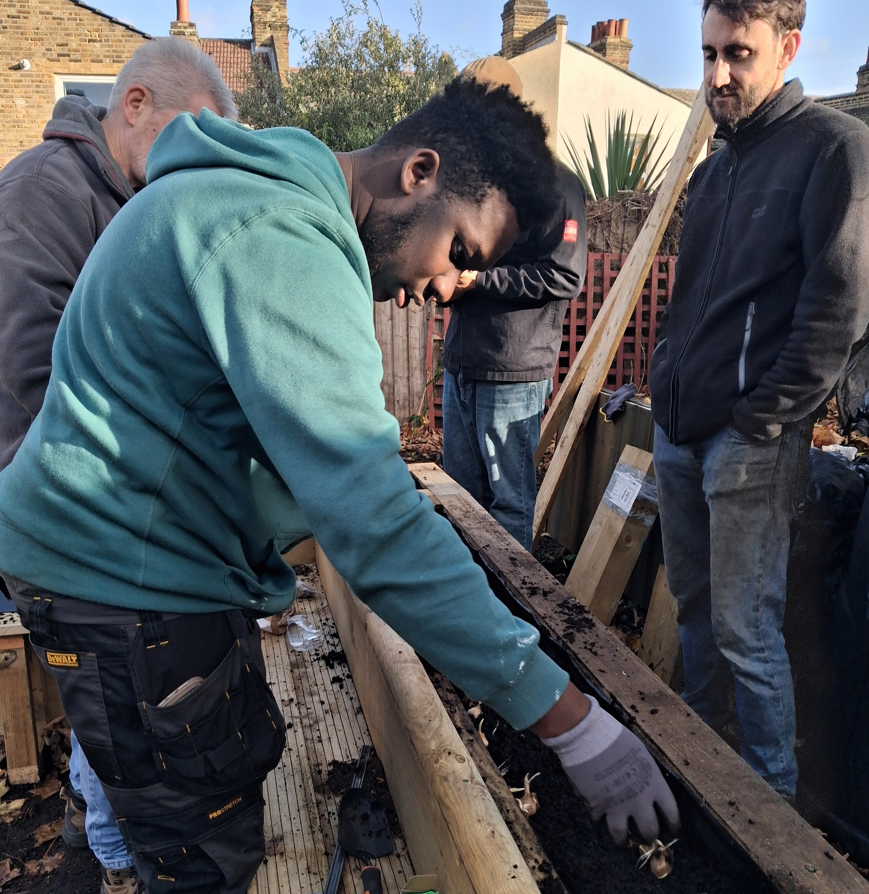
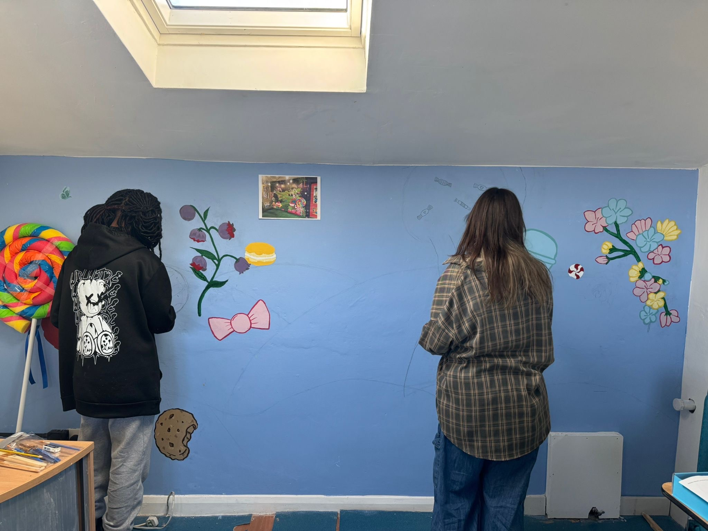
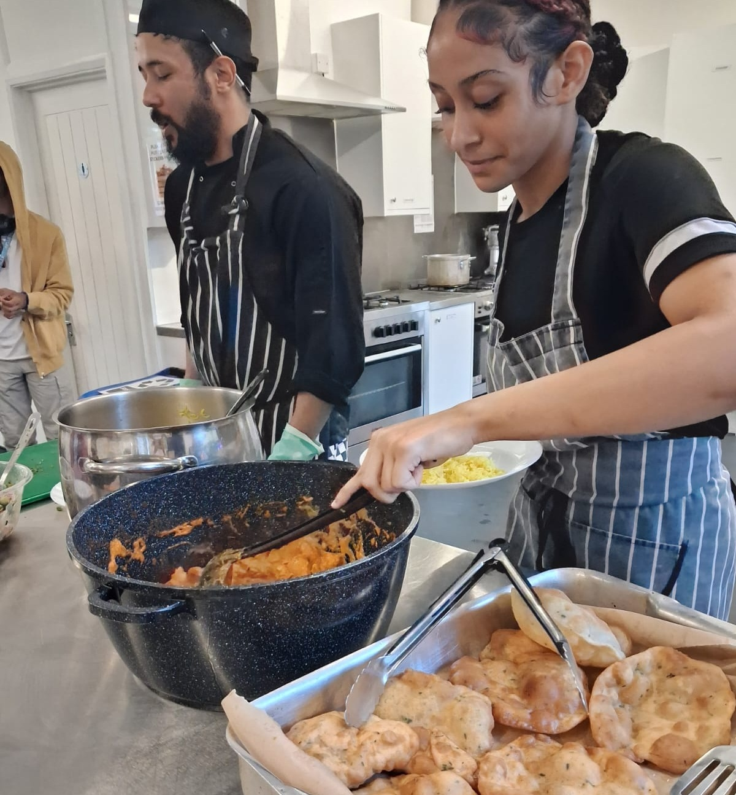
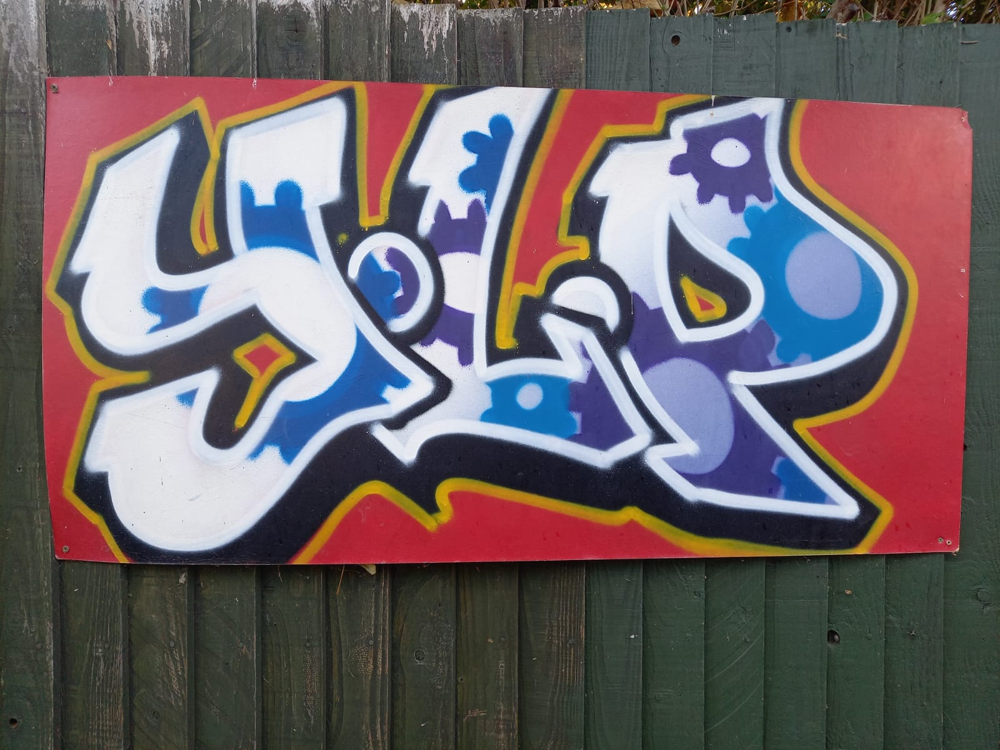

We offer a wide range of exciting programmes for 11-18 year olds.
Young people can gain Open College Network accreditations in Entry 3, Level 1 and Level 2, accredited by Ofqual, on the programmes listed below.
These qualifications are designed to provide young people with the skills and knowledge necessary for various
career paths.
Many of our young people go on to find work related to the skills gained in our workshops.
Please complete the
referral form attached or contact us for more information.
We also offer one-to-one mentoring support and tuition in Entry level and Functional skills in English and Maths.
The cost is £150 per day which includes breakfast, a hot lunch and all accreditation costs.
Our day runs from 9.30am-2.30pm.
Our programmes:
One-to-one Mentoring

Our one-to-one mentoring provides personalised support to help young people reach their potential. Our experienced mentors work with you on areas including confidence building, goal setting, managing challenges, and planning for your future. Our mentors are here to help young people succeed. Sessions are tailored to your needs and run at times that work for you.
English and Maths Functional Skills courses

Functional Skills courses in English and Maths teach real-world skills you will use every day. From writing emails and managing money, to understanding data and solving practical problems, these qualifications focus on skills that matter for work and life. Available at Entry level 3 Level 1, and Level 2; these courses are practical and engaging, with support tailored to your learning style. Qualifications are accredited by Ofqual and recognised by employers.
Motorcycle Mechanics

Our motorbike courses provide hands-on experience in motorcycle maintenance, road safety, and essential employability skills. Young people practice using tools and equipment, routine checks, and budgeting for maintenance, while following safe working practices and using personal protective equipment. The course also covers road safety and safe riding techniques, including cycling skills as a foundation. Young people gain confidence, practical skills, and safety awareness for further training, employment, or independent riding.
Bike maintenance and repair

Learn practical cycling skills with our hands-on courses. Participants will maintain and prepare bicycles, including lubricating chains, replacing wheels, tyres, and inner tubes, and performing safety checks. The courses also build teamwork, communication, and road safety awareness, giving young people confidence and practical skills for independent cycling or further training.
Woodwork and Carpentry

Our hands-on courses help young people develop practical skills in construction and everyday tasks through real-life projects. They explore measurements, angles, shapes, and safe tool use while applying these skills practically. Young people also gain knowledge of health and safety and build employability skills like teamwork, communication, budgeting, and following instructions, supporting progression to further training, employment, or independent projects.
Gardening

This course introduces basic horticultural skills such as sowing, growing, and plant care. Young people explore plant propagation, soil types, garden habitats, and the importance of sustainability and environmental awareness. The course links with carpentry through building garden structures and with catering by growing produce used in food preparation, encouraging practical, hands-on learning and an understanding of sustainable food systems.
Art and Design

This course introduces young poeple to arts and crafts through an exploration of basic design elements such as colour, shape, texture, and pattern. Young people develop communication skills while planning, organising, and producing creative work.
Catering

This course introduces young peolpe to essential catering skills and knowledge. It covers health and safety, food safety, and the correct handling, cleaning, and maintenance of kitchen tools and equipment. Young people will develop an understanding of allergens and food intolerances to ensure safe food preparation. The course explores basic cooking and baking techniques, food planning, and cultural awareness, helping young people appreciate different cuisines and dietary needs. Overall, the course encourages safe, organised, and creative approaches to preparing and serving food.
Graffiti

This course provides an introduction to graffiti as an art form and part of urban culture. It explores the history of graffiti and its connections to music, fashion, and youth culture. Young people are introduced to basic graffiti rules, legal awareness, and safety requirements. The course covers fundamental graffiti techniques, materials, and colour use to help develop personal style and creativity. Safe handling of paints and tools is emphasized throughout, encouraging responsible and respectful artistic practice.
Music Production
This course introduces young peolpe to music and sound creation using a digital audio workstation (DAW). Young people will develop skills in recording and editing audio files while exploring creative sound techniques.
The course also encourages performance and self-expression, helping young people build confidence through experimenting with music, sound, and live or recorded performance in a supportive environment.
Here are some examples of what we do in the music studio.